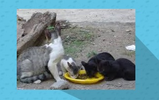
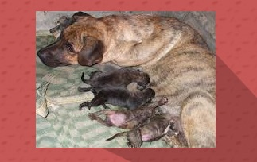
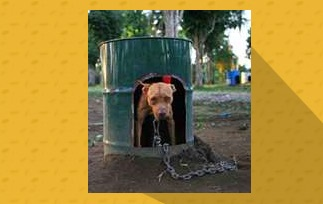
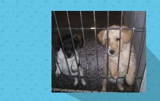
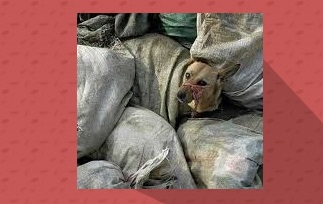
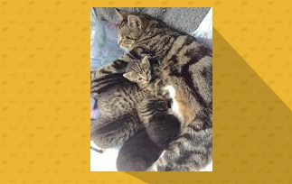

-

Kiara
Kiara es una gatita que recientemente tuvo tres lindos gatitos, los cuales fueron llevados a hogares amorosos y responsables.
-

Lola
Lola y sus cuatro cachorros fueron rescatados de una alacantarilla y llevados a un hogar de paso mientras encuentran un nuevo hogar.
-

Sultan
Este hermoso pitbul era utilizado para peleas caninas, fue rescatado y resocializado para que pueda ser adoptado.
-

Lucas y Paco
Este par de hermanos fueron rescatados cuando sus amos los dejaron abandonados en la casa donde vivían. Ahora viven felices.
-

Troski
Este perrito vivía en un basurero fue rescatado y espera ser adoptado.
-

Mila
Mila y sus gatitos fueron rescatados en un parque en donde fueron abadonados por sus dueños.